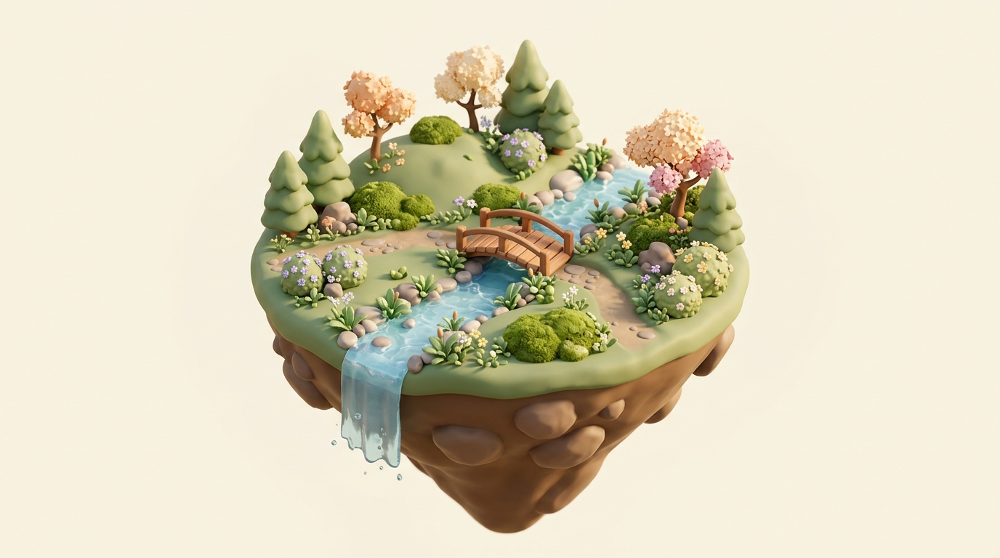
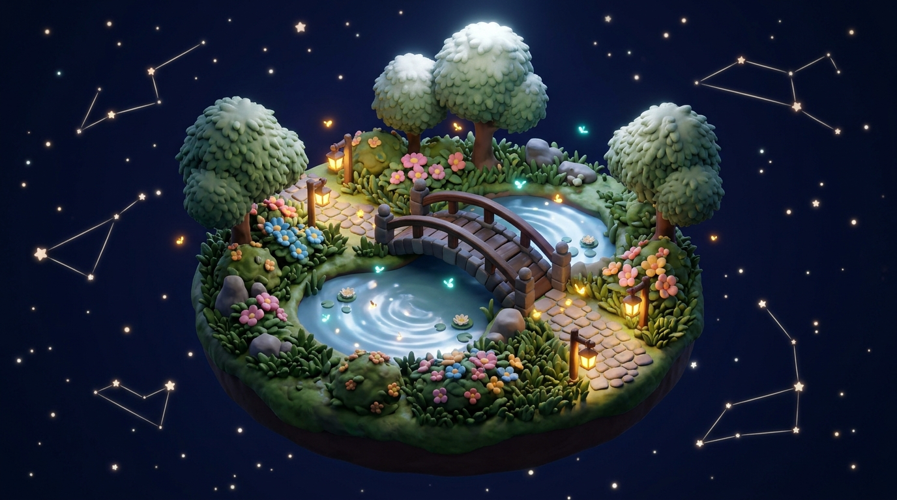
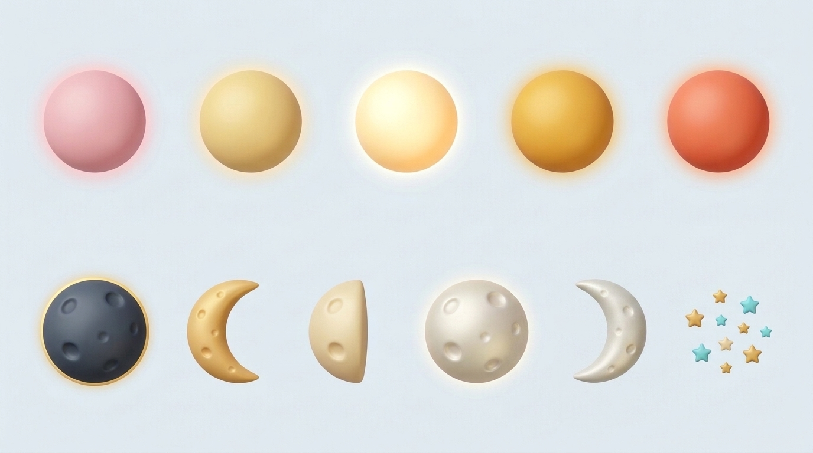
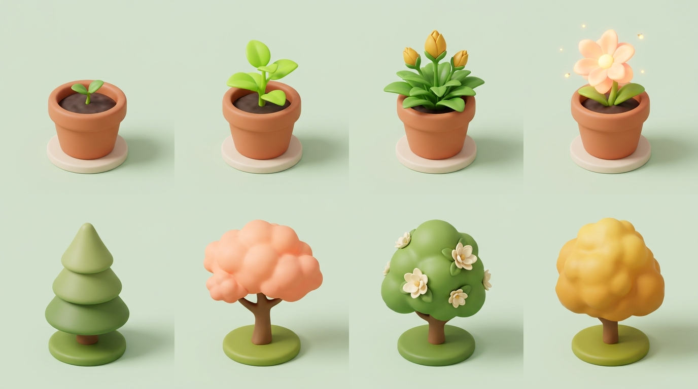
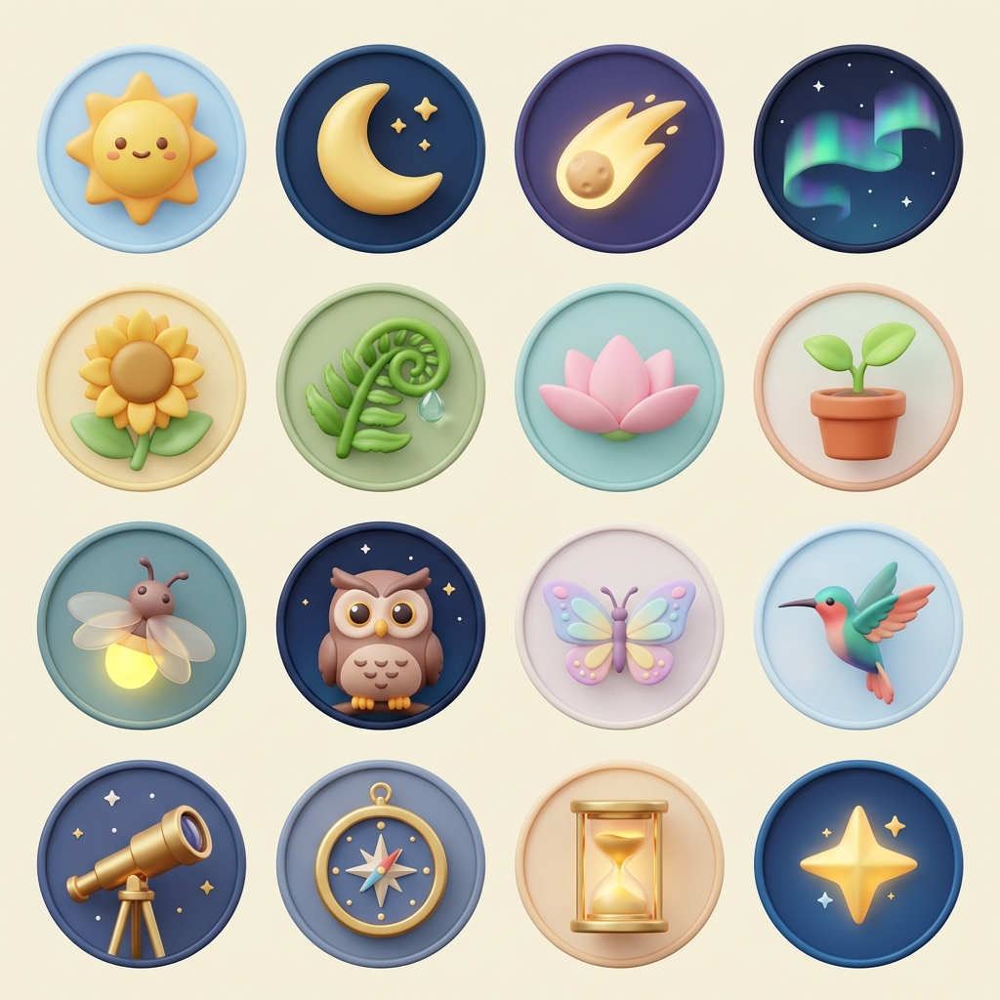

Lume
SOFT-3D STUDIO + BENTO UI · FASE 03
09:30 · Manhã
Palco Diorama Soft-3D (Passe o mouse ou deslize 24h)
100% Luz do DiaCiclo Vivo · Jardim Iluminado


Sol (5 momentos) & Fases da Lua Soft-3D
Da Aurora rosada ao Sol poente coral, mais as fases esculpidas da Lua e estrelas de constelação para o céu e Calendário Mensal.

Estágios de Crescimento & Árvores do Jardim
Acima: 4 estágios evolutivos de cada tarefa composta. Abaixo: espécies colecionáveis para o jardim e cartões Bento.

16 Avatares Soft-3D + Foto Google + Upload Próprio
Clique em qualquer avatar abaixo para aplicar na prévia de perfil ou envie sua própria foto.
Athos Danilo · vagalume-estelar
Avatar Soft-3D · Criaturas do Jardim
Upload aceita PNG/JPG/WebP (otimizado para 256x256 no servidor)
PRANCHA ORIGINAL 4x4 COMPLETA
